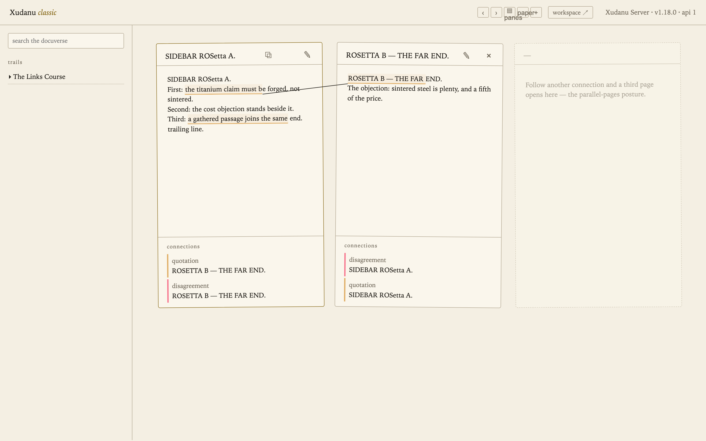
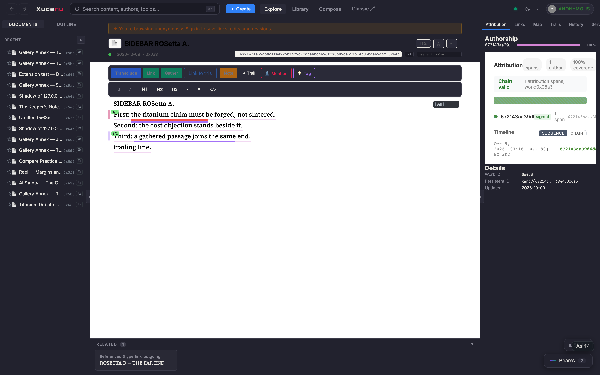
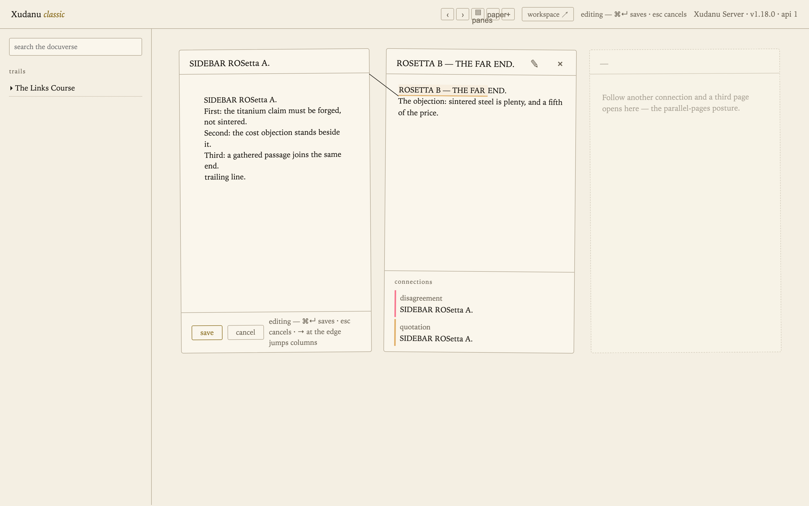
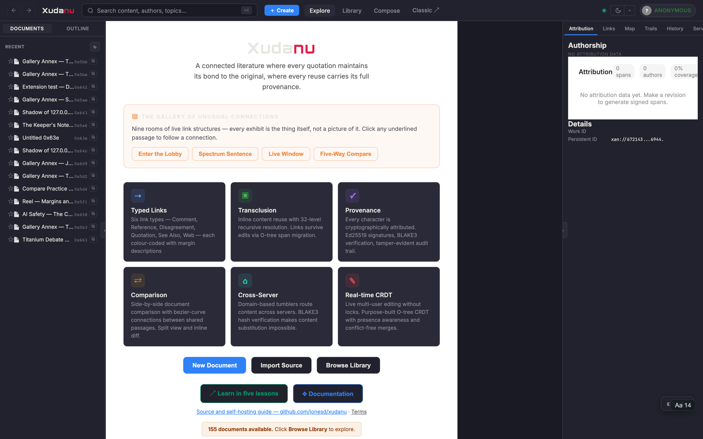

Classic vs Workspace — the same docuverse in two postures
One model, two faces. Both clients speak the same frozen wire
contract to the same server: every work, link, gather, and revision you create in
either is immediately real in both. The classic client is the
reading-and-connecting posture — parallel pages, visible connections, the
register of the 1972 drawings. The workspace is the workbench —
live collaborative editing, provenance panels, gathers, and the document map.
Switch between them at any time: workspace ↗ in the classic
header, Classic ↗ in the workspace top bar (it always knows
which work you have open).
Reading a typed connection
The same two works, joined by a typed link. Classic draws the connection as an ink line between the passages; the workspace underlines both ends and lists the connection in its panel. Both are the same link record — hover either end for its type (here: disagreement, in red).


Transclude, Link, and the green Gather; the right panels carry connections, provenance, and history.Gathering passages into one end
A gather is one connection whose end is filled jointly by several
passages — not three links, but one link with a set. In classic, every member of a
gathered end shares one colour (below: two underlines, one connection; hover for
“gathered passage i of N”). Make one by selecting a passage, pressing
⬈, and choosing gather into an existing end. In the
workspace, select the passage and press the green Gather button.

Editing and creating
Classic edits through the same CRDT path as the workspace — grab-and-release
happens invisibly; ⌘↵ saves, esc cancels, arrows at
the column edge jump between pages. A new work is one press of +, born
straight into editing; its title becomes its first line. The workspace simply saves as
you type (about 1.5 s after you pause), every pause a revision.


Rosetta — the same act, both names
| Act | Classic | Workspace |
|---|---|---|
| Open a work | search, a trail stop, or a shared #w<id> link | library, ⌘K search, or ?work=0x<id> |
| Follow a connection | click an underline — far page opens beside (3rd page follows) | click the underline — jump, or open Compare for both ends at once |
| Make a link | select → ⬈ → pick far passage/work → choose the kind | select → Link → wizard (target, type, extra ends) |
| Gather | select → ⬈ → gather into an existing end | select → green Gather → pick the end |
| Revise text | ✎ → type → | just type — autosave, revision slider for history |
| New work | + → born editing; title = first line | Create / import a file / transclude into a new work |
| Same-content passages | identity boxes with ↩ source tabs | attribution panel and provenance chain |
| Trails | sidebar, chevron-expanded stops | Trails panel with progress |
| Switch | workspace ↗ (carries the open work) | Classic ↗ (always present, carries the work when open) |
| Looks | ink / paper skins; panes / transpointing-windows postures | themes and palettes |
Everything above is one docuverse on one server — the two clients are independent implementations of the same published wire contract, which is the point: the model is the product, and the faces are swappable.